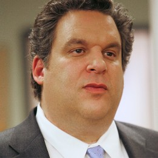
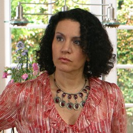
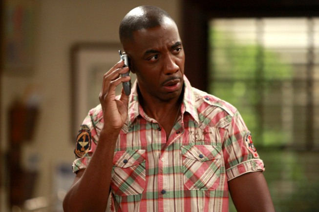

|
 |  |
 |  |
| Larry David | Jeff Garlin | Cheryl Hines | Susie Essman | J.B. Smoove |

J.B. Smoove was born in Plymouth, North Carolina and raised in Mount Vernon, NY. Smoove is a writer, comedian and actor who has been featured on "Everyboyd Hates Chris," "Saturday Night Live," and was recently the host of NBC's "Last Comic Standing." He currently resides in Los Angeles with his wife and teenage daughter.